Last updated: 2021-03-02
Checks: 2 0
Knit directory: dsc-susie-z/
This reproducible R Markdown analysis was created with workflowr (version 1.6.2). The Checks tab describes the reproducibility checks that were applied when the results were created. The Past versions tab lists the development history.
Great! Since the R Markdown file has been committed to the Git repository, you know the exact version of the code that produced these results.
Great! You are using Git for version control. Tracking code development and connecting the code version to the results is critical for reproducibility.
The results in this page were generated with repository version ee14245. See the Past versions tab to see a history of the changes made to the R Markdown and HTML files.
Note that you need to be careful to ensure that all relevant files for the analysis have been committed to Git prior to generating the results (you can use wflow_publish or wflow_git_commit). workflowr only checks the R Markdown file, but you know if there are other scripts or data files that it depends on. Below is the status of the Git repository when the results were generated:
Ignored files:
Ignored: .DS_Store
Ignored: .Rhistory
Ignored: .Rproj.user/
Ignored: .sos/
Ignored: analysis/.DS_Store
Ignored: code/.Rhistory
Ignored: data/.DS_Store
Ignored: output/.DS_Store
Ignored: output/SuSiEFD/.DS_Store
Untracked files:
Untracked: code/N2finemapping.CAVIAR.rds
Untracked: code/N2finemapping.FINEMAP.rds
Untracked: code/ROC.R
Untracked: code/caviar.R
Untracked: code/caviar.res._condition_1.log
Untracked: code/caviar.res._condition_1.z
Untracked: code/caviar.res._condition_1_post
Untracked: code/caviar.res._condition_1_set
Untracked: code/caviarld.ld
Untracked: code/cs_compare.R
Untracked: code/finemap.R
Untracked: code/finemap.res._condition_1.config
Untracked: code/finemap.res._condition_1.log
Untracked: code/finemap.res._condition_1.master
Untracked: code/finemap.res._condition_1.snp
Untracked: code/finemap.res._condition_1.z
Untracked: code/finemapld.ld
Untracked: code/pip_calibration.R
Untracked: code/pip_compare.R
Untracked: code/pip_extract.R
Untracked: code/query.R
Untracked: data/random_data_31.rds
Untracked: data/random_data_31_sim_gaussian_35.rds
Untracked: data/random_data_31_sim_gaussian_35_get_sumstats_1.rds
Untracked: data/small_data_1.ld_in_file.in.ld
Untracked: data/small_data_1.ld_out_file.out.ld
Untracked: data/small_data_132.ld_in_file.in.ld
Untracked: data/small_data_132.ld_out_file.out.ld
Untracked: data/small_data_132_sim_gaussian_12.rds
Untracked: data/small_data_132_sim_gaussian_12_get_sumstats_1.rds
Untracked: data/small_data_1_sim_gaussian_2.rds
Untracked: data/small_data_1_sim_gaussian_2_get_sumstats_1.rds
Untracked: data/small_data_46.rds
Untracked: data/small_data_46_sim_gaussian_10.rds
Untracked: data/small_data_46_sim_gaussian_10_get_sumstats_2.rds
Untracked: data/small_data_69.ld_in_file.in.ld
Untracked: data/small_data_69.ld_out_file.out.ld
Untracked: data/small_data_69.rds
Untracked: data/small_data_69_sim_gaussian_3.rds
Untracked: data/small_data_69_sim_gaussian_3_get_sumstats_1.rds
Untracked: data/small_data_69_sim_gaussian_3_get_sumstats_1_susie_z_1.rds
Untracked: data/small_data_69_sim_gaussian_3_get_sumstats_1_susie_z_2.rds
Untracked: figure/
Untracked: output/SuSiEFD/r.in.pdf
Untracked: output/SuSiEFD/r.out.addz.pdf
Untracked: output/SuSiEFD/r.out.pdf
Untracked: output/SuSiEFD/small_data_148.ld_in_file.in.ld
Untracked: output/SuSiEFD/small_data_148.ld_out_file.out.ld
Untracked: output/SuSiEFD/small_data_148.rds
Untracked: output/SuSiEFD/small_data_148_sim_gaussian_1.rds
Untracked: output/SuSiEFD/small_data_148_sim_gaussian_1_get_sumstats_1.rds
Untracked: output/SuSiEFD/small_data_148_sim_gaussian_1_get_sumstats_1_caviar_4.cache.CAVIAR_condition_1.z
Untracked: output/SuSiEFD/small_data_148_sim_gaussian_1_get_sumstats_1_caviar_4.ld_out_z_file.out.z.ld
Untracked: output/SuSiEFD/small_data_68_sim_gaussian_2_get_sumstats_1_caviar_4.cache.CAVIAR_condition_1.z
Untracked: output/SuSiEFD/small_data_68_sim_gaussian_2_get_sumstats_1_caviar_4.ld_out_z_file.out.z.ld
Untracked: output/SuSiEFD/susierss.in.2.gif
Untracked: output/SuSiEFD/susierss.in.2.pdf
Untracked: output/SuSiEFD/susierss.out.2.gif
Untracked: output/SuSiEFD/susierss.out.2.pdf
Untracked: output/SuSiEFD/susierss.out.addz.1.gif
Untracked: output/SuSiEFD/susierss.out.addz.1.pdf
Untracked: output/SuSiEFD/susierss.out.addz.2.pdf
Untracked: output/SuSiEFD/susierss.out.addz.2.w.gif
Untracked: output/SuSiEFD/susierss.out.addz.2.w.pdf
Untracked: output/SuSiEFD/susierss.out.addz.5.pdf.gif
Untracked: output/SuSiEFD/susierss.out.addz.5.pdf.pdf
Untracked: output/dscoutProblem475.rds
Untracked: output/dscoutProblem75.rds
Untracked: output/finemap_compare_random_data_null_dscout.rds
Untracked: output/finemap_compare_random_data_signal_dscout.rds
Untracked: output/finemap_compare_small_data_signal_dscout.rds
Untracked: output/finemap_compare_small_data_signal_dscout_RE8.rds
Untracked: output/r_compare_FINEMAP_PIP_ROC.rds
Untracked: output/r_compare_add_z_FINEMAP_PIP_ROC.rds
Untracked: output/r_compare_add_z_FINEMAP_ROC.rds
Untracked: output/r_compare_add_z_SuSiEb_ROC.rds
Untracked: output/r_compare_add_z_SuSiErss_ROC.rds
Untracked: output/r_compare_add_z_dscout_susie_finemap_tibble.rds
Untracked: output/r_compare_add_z_lambda_FINEMAP_ROC.rds
Untracked: output/r_compare_add_z_lambda_SuSiEb_ROC.rds
Untracked: output/r_compare_add_z_lambda_SuSiErss_ROC.rds
Untracked: output/r_compare_add_z_lambda_caviar_CAVIAR_ROC.rds
Untracked: output/r_compare_add_z_lambda_caviar_FINEMAP_ROC.rds
Untracked: output/r_compare_add_z_lambda_caviar_SuSiEb_L1_ROC.rds
Untracked: output/r_compare_add_z_lambda_caviar_SuSiEb_L2_ROC.rds
Untracked: output/r_compare_add_z_lambda_caviar_SuSiEb_L5_ROC.rds
Untracked: output/r_compare_add_z_lambda_caviar_SuSiErss_L1_ROC.rds
Untracked: output/r_compare_add_z_lambda_caviar_SuSiErss_L2_ROC.rds
Untracked: output/r_compare_add_z_lambda_caviar_SuSiErss_L5_ROC.rds
Untracked: output/r_compare_add_z_lambda_caviar_dscout_caviar_tibble.rds
Untracked: output/r_compare_add_z_lambda_caviar_dscout_finemap_tibble.rds
Untracked: output/r_compare_add_z_lambda_caviar_dscout_susiebhat_tibble.rds
Untracked: output/r_compare_add_z_lambda_caviar_dscout_susierss_tibble.rds
Untracked: output/r_compare_add_z_lambda_dscout_susie_finemap_tibble.rds
Untracked: output/r_compare_dscout_susie_finemappip_tibble.rds
Untracked: output/r_compare_dscout_susie_finemappip_truth_tibble.rds
Untracked: output/r_compare_finemap_v1.3.1_ROC.rds
Untracked: output/r_compare_finemapv1.3.1.rds
Untracked: output/r_compare_maf0.05_SuSiERSS_L2_ROC.rds
Untracked: output/r_compare_maf0.05_SuSiERSS_L5_ROC.rds
Untracked: output/r_compare_maf0.05_SuSiEb_L2_ROC.rds
Untracked: output/r_compare_maf0.05_SuSiEb_L5_ROC.rds
Untracked: output/r_compare_maf0_SuSiERSS_L2_ROC.rds
Untracked: output/r_compare_maf0_SuSiERSS_L5_ROC.rds
Untracked: output/r_compare_maf0_SuSiEb_L2_ROC.rds
Untracked: output/r_compare_maf0_SuSiEb_L5_ROC.rds
Untracked: output/r_compare_maf_dscout_caviar_maf0.05_tibble.rds
Untracked: output/r_compare_maf_dscout_caviar_maf0_tibble.rds
Untracked: output/r_compare_maf_dscout_finemap_maf0.05_tibble.rds
Untracked: output/r_compare_maf_dscout_finemap_maf0_tibble.rds
Untracked: output/r_compare_maf_dscout_susiebhat_maf0.05_tibble.rds
Untracked: output/r_compare_maf_dscout_susiebhat_maf0_tibble.rds
Untracked: output/r_compare_maf_dscout_susierss_maf0.05_tibble.rds
Untracked: output/r_compare_maf_dscout_susierss_maf0_tibble.rds
Untracked: output/r_compare_mafall_FINEMAP_L2_ROC.rds
Untracked: output/r_compare_mafall_FINEMAP_L5_ROC.rds
Untracked: output/r_compare_mafall_caviar_ROC.rds
Untracked: output/r_compare_susieb_PIP_ROC.rds
Untracked: output/r_compare_susiepip_tibble.rds
Untracked: output/r_compare_susierss_PIP_ROC.rds
Untracked: output/random_data_100_sim_gaussian_null_1_get_sumstats_1_finemap_1.rds
Untracked: output/random_data_31_35_fit_em.rds
Untracked: output/random_data_76.rds
Untracked: output/random_data_76_sim_gaussian_8.rds
Untracked: output/random_data_76_sim_gaussian_8_get_sumstats_1.rds
Untracked: output/small_data_42_sim_gaussian_36_get_sumstats_2_susie_z_2.rds
Untracked: output/small_data_92_sim_gaussian_30_get_sumstats_2_susie_z_2.rds
Unstaged changes:
Modified: analysis/SuSiErssNotConverge.Rmd
Modified: analysis/SusieZPerformance.Rmd
Modified: analysis/SusieZPerformanceRE3.Rmd
Modified: analysis/r_compare_add_z_lambda_caviar_susierss_ROC.Rmd
Modified: output/dsc_susie_z_v_output.rds
Deleted: susie_z_gaussian_benchmark.dsc
Note that any generated files, e.g. HTML, png, CSS, etc., are not included in this status report because it is ok for generated content to have uncommitted changes.
These are the previous versions of the repository in which changes were made to the R Markdown (analysis/SuSiERSS_dsc_susiersspaper_20210301_results.Rmd) and HTML (docs/SuSiERSS_dsc_susiersspaper_20210301_results.html) files. If you’ve configured a remote Git repository (see ?wflow_git_remote), click on the hyperlinks in the table below to view the files as they were in that past version.
| File | Version | Author | Date | Message |
|---|---|---|---|---|
| Rmd | ee14245 | zouyuxin | 2021-03-02 | wflow_publish(“analysis/SuSiERSS_dsc_susiersspaper_20210301_results.Rmd”) |
| html | 68f05a8 | zouyuxin | 2021-03-02 | Build site. |
| Rmd | 43beb63 | zouyuxin | 2021-03-02 | wflow_publish(“analysis/SuSiERSS_dsc_susiersspaper_20210301_results.Rmd”) |
This simulation uses GTEx genotype data. There are 152 dataset. We randomly separated 574 individualsinto 2 groups, each group has 287 samples. We simulate data with 1,2,3,4,5 signals and PVE 0.2. We run susie_rss with L=5.
We first check the impact of estimaing residual variance.
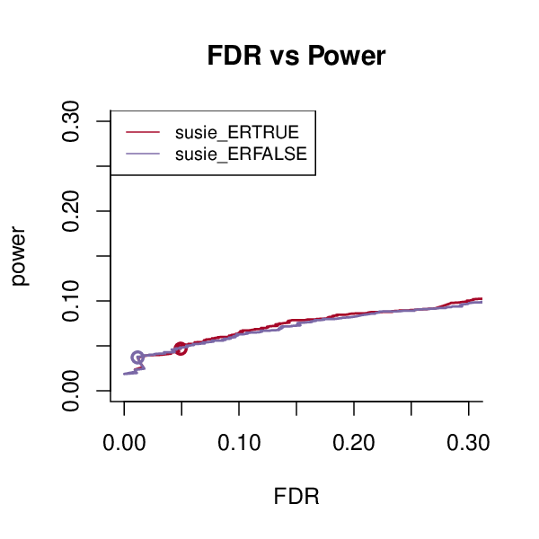 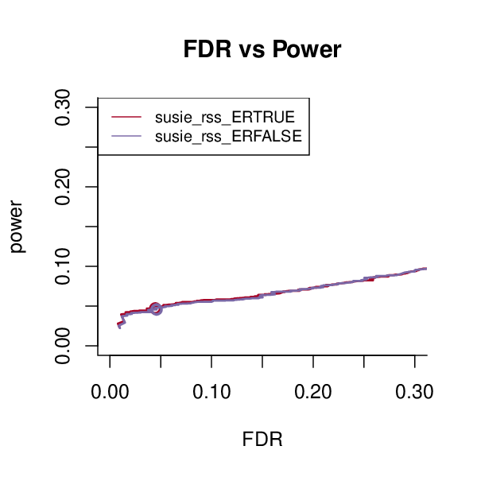 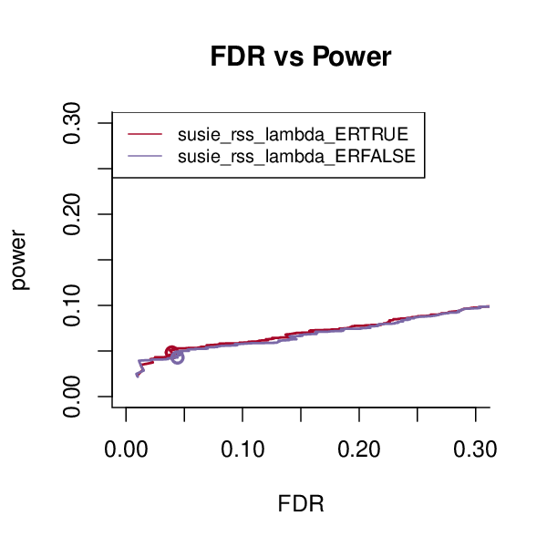
We estimate residual variance in the following comparisons.
SuSiE-RSS 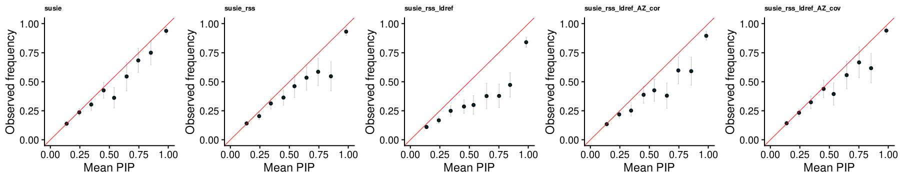
SuSiE-RSS-lambda 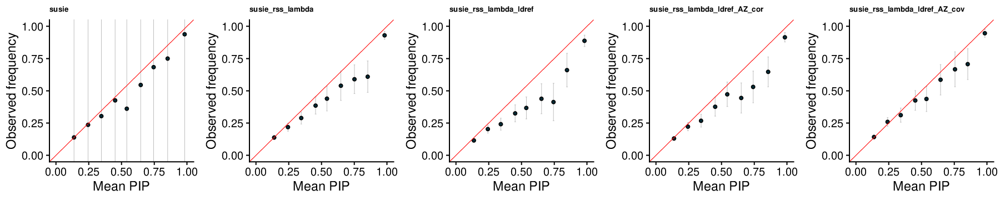
CAVIAR 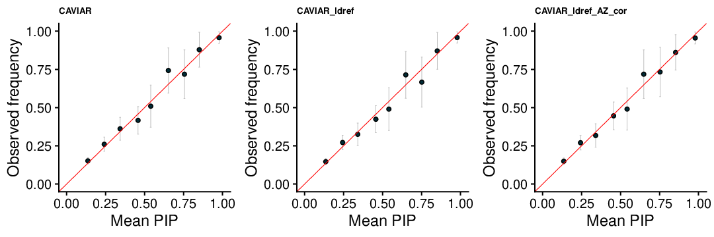
FINEMAP v1.1 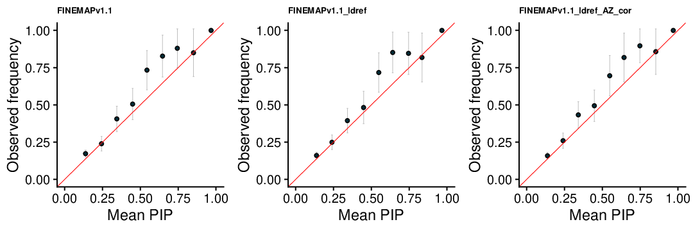
FINEMAP v1.4 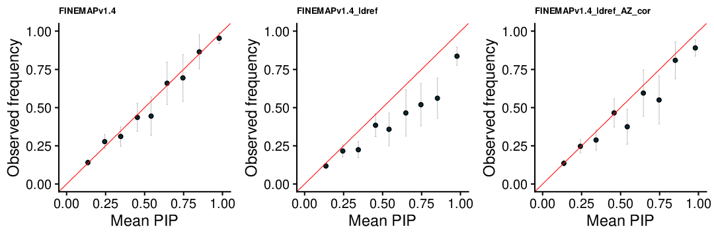
Using in sample LD
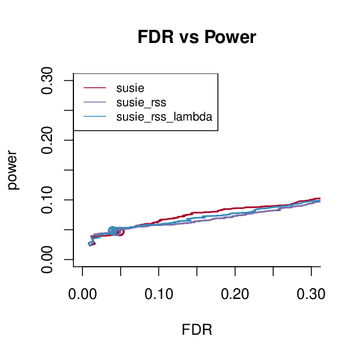 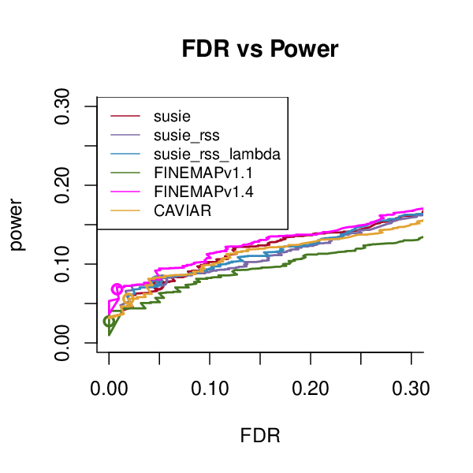
SuSiE-RSS with reference LD
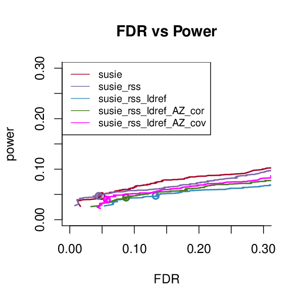
SuSiE-RSS-lambda with reference LD
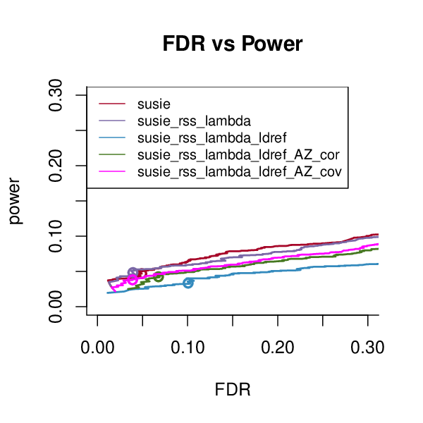
CAVIAR with reference LD
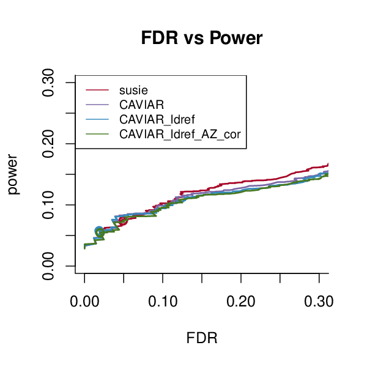
FINEMAP v1.1 with reference LD
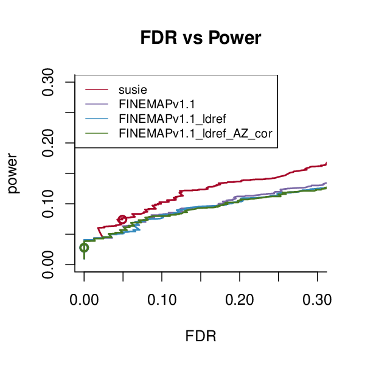
FINEMAP v1.4 with reference LD
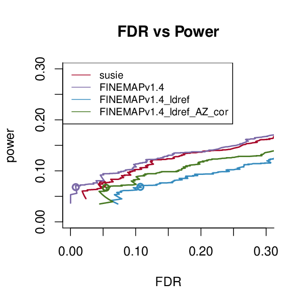
1 signal
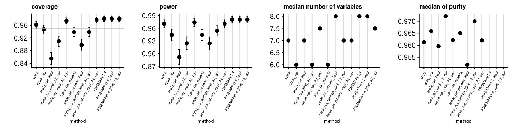
2 signals
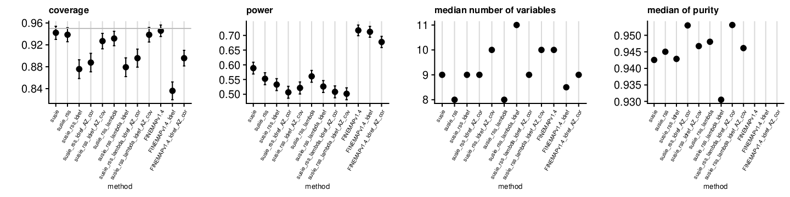
3 signals
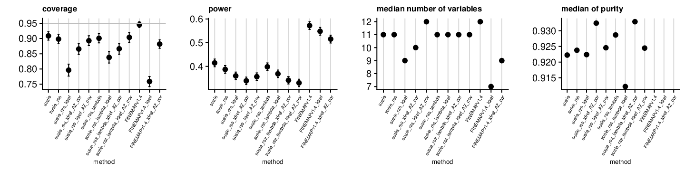
4 signals
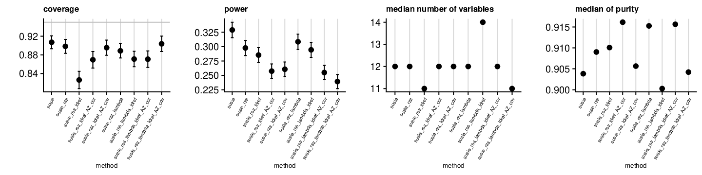
5 signals
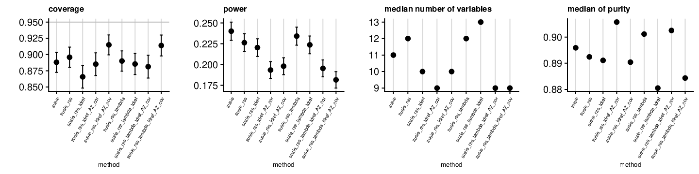